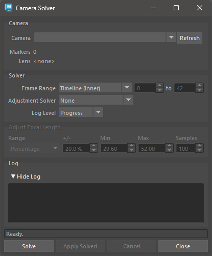
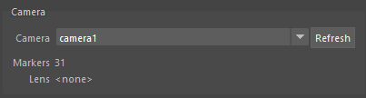
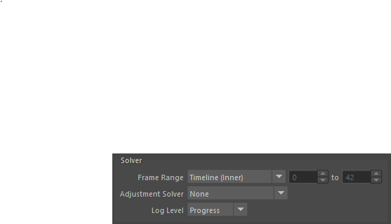
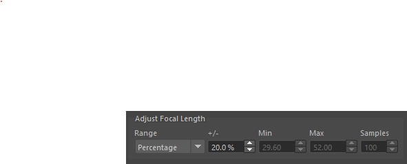
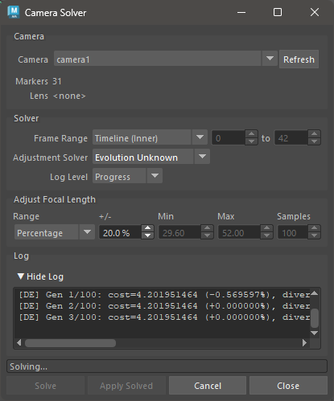

Camera Solver#
The Camera Solver tool reconstructs animated camera motion and static 3D bundle positions “from scratch” - using only 2D marker tracks and the camera’s initial focal length and lens distortion settings.
See Camera Solver Overview for a detailed technical overview.
{kind=link}

Camera Solver User Interface#
Usage#
Select a camera node, or activate a camera viewport.
Ensure Markers are parented under the camera and contain 2D track data.
Open the Camera Solver UI.
The Camera drop-down will auto-populate from the scene and pre-select the active camera. Press Refresh if you add new cameras after opening the window.
The Markers count shows how many markers are found under the selected camera. The solve requires at least a few markers with tracks across the frame range.
Set the Frame Range and any solver options (see below).
Press Solve.
The solve runs as a background process; Maya remains interactive.
Progress is shown in the Log area and the status bar.
Press Cancel at any time to stop the solve.
When the solve completes, press Apply Solved to write the results back onto the camera transform and bundles in the scene.
This step is undoable with
Ctrl+Z.You can press Apply Solved again at any time to re-apply the last solve result without re-running the solve.
To open the Camera Solver UI, use this Python command:
import mmSolver.tools.camerasolver.tool as tool
tool.open_window()
Camera Group#
{kind=link}

Field |
Description |
|---|---|
Camera |
Drop-down listing all non-startup cameras in the scene. The camera selected here is used for the solve. Press Refresh to update the list after adding cameras. |
Markers |
Read-only count of Marker nodes parented under the selected camera. Updates automatically when the camera selection changes. |
Lens |
Read-only display of the lens distortion node connected to the
selected camera, or |
Solver Group#
{kind=link}

Field |
Description |
|---|---|
Frame Range |
The frames to solve. Choose Timeline (Inner) or Timeline (Outer) to follow the Maya timeline bars, or Custom to type explicit start and end frame numbers. |
Adjustment Solver |
Optional second pass that adjusts camera attributes (such as focal length) after the initial reconstruction. See Adjustment Solver below. |
Log Level |
Controls how much output is written to the Log area during the solve. Progress (default) shows high-level progress messages. Debug is intended for developer diagnostics and produces very verbose output. |
Adjustment Solver#
The Adjustment Solver runs a second optimisation pass after the initial camera reconstruction and can search for a better focal length. The options are:
Option |
Description |
|---|---|
None |
No adjustment pass is run. The focal length is taken directly from the camera node and is not changed. |
Evolution Refine |
Uses a Differential Evolution algorithm to refine attribute values, starting from the current camera focal length. A good choice when the focal length is approximately known. |
Evolution Unknown |
Uses a Differential Evolution algorithm to search the full focal length range. Slower but more thorough than Evolution Refine when the focal length is unknown. |
Uniform Grid |
Samples focal length at evenly-spaced values across the search range and picks the best result. The number of samples is set by the Samples field in the Adjust Focal Length group. |
Adjust Focal Length Group#
{kind=link}

This group is enabled only when Adjustment Solver is not None. It controls the focal length search range used during the adjustment pass.
Field |
Description |
|---|---|
Range |
How the search range is defined. Percentage derives the min/max automatically from the camera’s current focal length. Min / Max lets you enter explicit bounds in millimetres. |
+/- |
(Percentage mode only) The search range expressed as a percentage of the camera’s current focal length. Default is 20 %. Higher values broaden the search at the cost of solve time. |
Min |
(Min/Max mode only) Minimum focal length to search, in millimetres. |
Max |
(Min/Max mode only) Maximum focal length to search, in millimetres. |
Samples |
(Uniform Grid solver only) Number of evenly-spaced focal length values to evaluate across the search range. Default is 100. |
Log Group#
The Log area displays output from the solver process as it runs. Press the ▼ Hide Log / ▶ Show Log toggle to collapse or expand the log panel. All solver messages are appended during the solve and are not cleared until the next solve starts.
{kind=link}

Camera Solver mid-solve, showing log output and the Cancel button enabled.#
The Log Level in the Solver group controls the minimum severity of messages that appear here.
{kind=link}
Scene Settings#
All Camera Solver options are saved inside the Maya scene file. This means
each .ma / .mb file carries its own solver preferences, and multiple
open Maya sessions can hold independent values.
Python Functions#
Open the Camera Solver UI window:
import mmSolver.tools.camerasolver.tool as tool
tool.open_window()
Run the solve and apply results without the UI (synchronous - waits for the solve to finish before returning; press ESC key to cancel):
import mmSolver.tools.camerasolver.tool as tool
tool.run_camera_solve_and_load()
Run the solve asynchronously and apply the results in a separate step:
import mmSolver.tools.camerasolver.tool as tool
# Launch the solve (returns immediately).
tool.run_camera_solve()
# After the solve completes, apply the results.
tool.load_solved_camera()